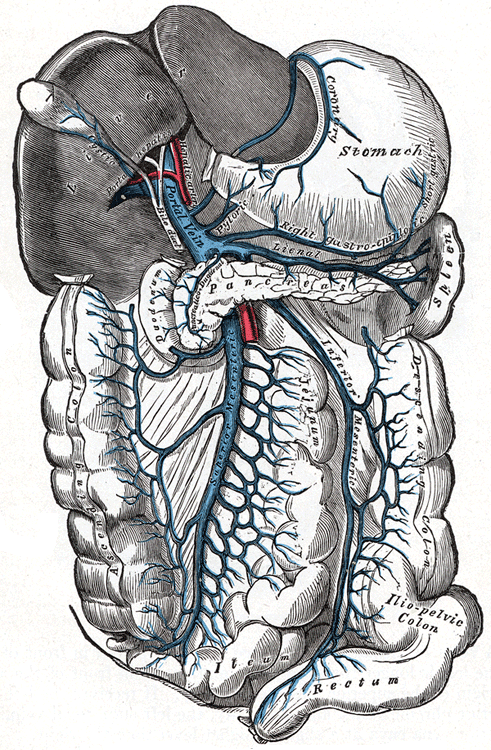
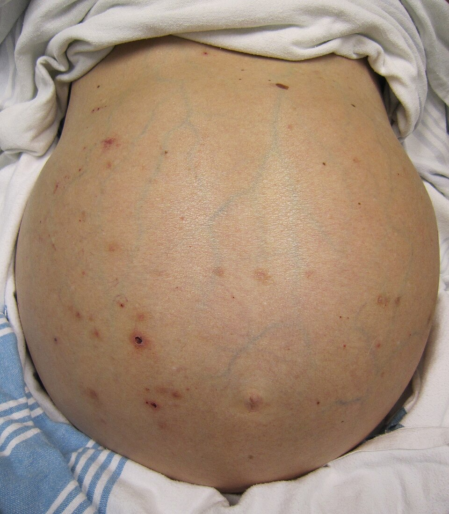
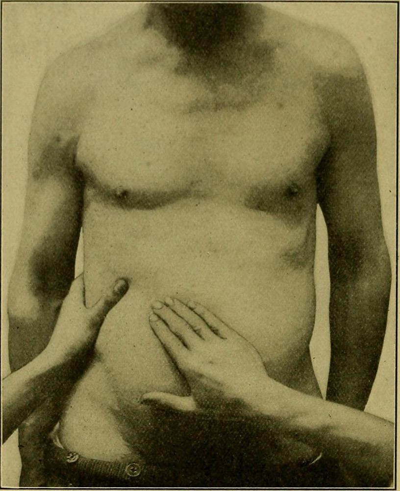
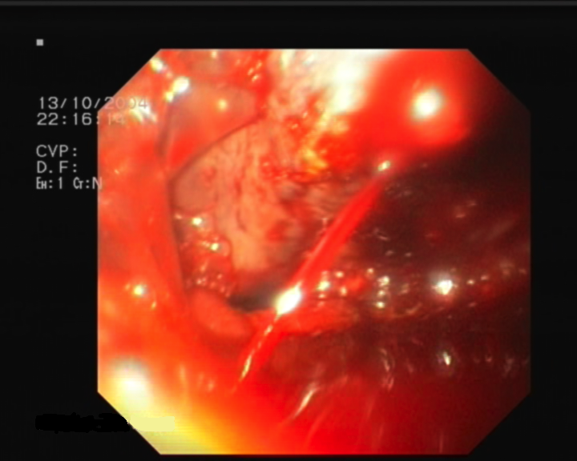
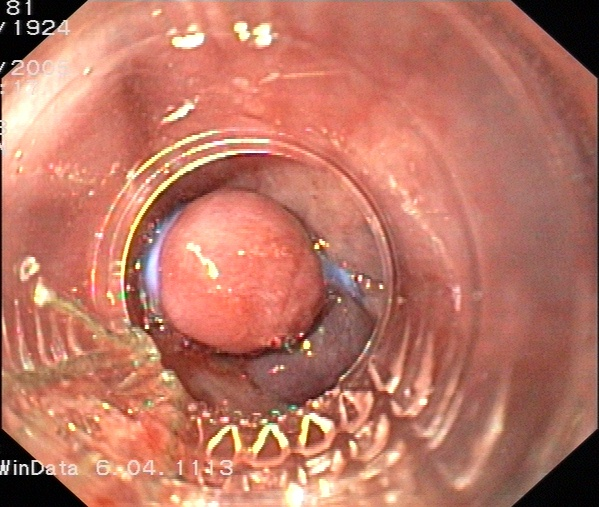
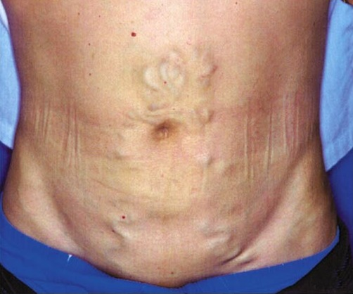
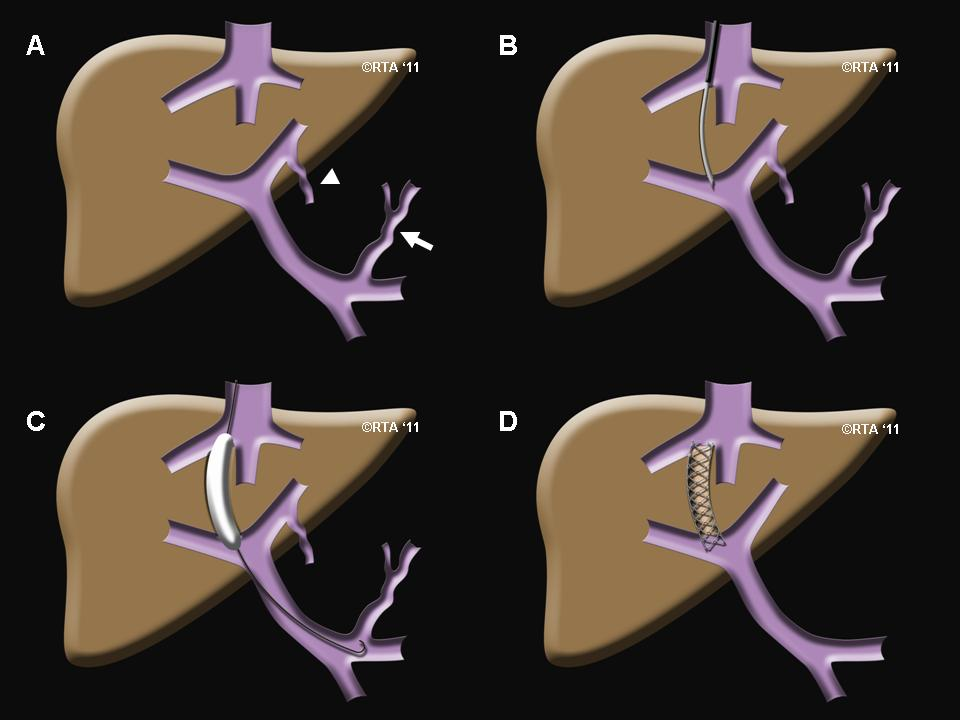

יתר לחץ דם פורטלי
מהשחמת אל הדליות: סיבות, מיימת, דימום מדליות, TIPS ושאנטים. ומה הכירורג צריך לדעת על מטופל עם שחמת
בסוף המפגש תדעו
- להגדיר יתר לחץ דם פורטלי ולמיין את הסיבות: prehepatic, intrahepatic ו-posthepatic
- להכיר את מסלולי המעקף בין המערכת הפורטלית לסיסטמית ואת הסימנים בבדיקה
- להעריך את מצב הכבד לפי Child-Pugh ולהכיר את מדד MELD
- לנהל דימום חריף מדליות לפי הסדר: החייאה, תרופות, אנדוסקופיה ו-TIPS
- להסביר את הטיפול במיימת ואת המקום של TIPS, שאנטים והשתלת כבד
יתר לחץ דם פורטלי במספרים
- שחמת: צלקות ופקעיות התחדשות ב-liver. אין לה טיפול יעיל. לכן מטפלים בעיקר ביתר הלחץ ובסיבוכיו
- מפוצה: בלי אירוע של דימום מדליות, אנצפלופתיה או מיימת. חציון הישרדות מעל 12 שנה
- לא מפוצה: אחרי אירוע כזה. חציון הישרדות 1.8 שנים בלבד
portal vein ומסלולי המעקף

👆 לחצו על אזור בציור כדי לקרוא עליו
נוצר מאחורי ה-pancreatic neck מה-superior mesenteric vein (SMV) ומה-splenic vein. אורכו 5.5–8 ס״מ וקוטרו כ-1 ס״מ. מביא כ-75% מהדם ל-liver. אין בו מסתמים. לכן הלחץ בו זהה לאורך כל המערכת. יתר לחץ דם פורטלי: מפל לחצים של יותר מ-5 מ״מ כספית בין ה-portal vein ל-hepatic veins.
יחד עם ה-short gastric veins הוא מזרים דם לוורידים שמתחת לרירית בקיבה העליונה וב-esophagus התחתון. משם הדם עובר ל-azygos vein. זה המעקף החשוב ביותר: כך נוצרים דליות בוושט ובקיבה.
מחברים את ה-spleen ל-fundus של הקיבה. בפקקת של ה-splenic vein (״יתר לחץ דם פורטלי שמאלי״, לרוב מפנקריאטיטיס או מגידול) הדם עוקף דרך ה-gastric veins, בעיקר ה-left gastroepiploic vein. כך נוצרות דליות בקיבה. כריתת טחול לבדה פותרת את הבעיה.
עובר מאחורי ה-pancreas אל ה-portal vein. בשאנט ספלנו-רנלי דיסטלי מחברים את הקצה הדיסטלי שלו ל-left renal vein: הדליות מתנקזות דרך ה-spleen. ה-liver ממשיך לקבל דם מה-SMV.
ביתר לחץ דם פורטלי ה-spleen מוגדל ויש מיעוט טסיות. לרוב אלה לא בעיה קלינית. לכן כריתת טחול בגללן בדרך כלל מיותרת.
מנקז את המעי הדק ואת חצי המעי הגס הימני. בשאנטים לא סלקטיביים (פורטו-קבלי, מזו-קבלי) מנתבים את כל הזרימה הפורטלית למערכת הסיסטמית: הדליות נעלמות, אבל עולה הסיכון לאנצפלופתיה ולאי-ספיקת כבד.
מתנקז לרוב ל-splenic vein. דרך ה-superior rectal vein הוא מתחבר ל-rectal venous plexus, שם יכולים להיווצר דליות ברקטום.
אחד ממקומות המעקף בין המערכת הפורטלית לסיסטמית. ביתר לחץ דם פורטלי יכולים להופיע כאן ורידים מורחבים.
בשחמת מאלכוהול ההתנגדות לזרימה היא בסינוסואידים ואחריהם. מהענף השמאלי של ה-portal vein, ה-umbilical vein ב-ligamentum teres נפתח מחדש ויוצר את ״ראש המדוזה״ סביב הטבור.
portal vein ויובליו, מבט מלפנים · Gray's Anatomy (1918), איור 591 (נחלת הכלל)
איפה הלחץ "בורח"
prehepatic, intrahepatic או posthepatic
- פקקת ב-portal vein: הסיבה השכיחה. כ-50% מהמקרים בילדים. נוצרים כלי דם עוקפים אל ה-liver ("טרנספורמציה קברנוזית")
- פקקת ב-splenic vein בלבד: לרוב מפנקריאטיטיס או גידול. דליות בקיבה, לחץ פורטלי תקין. כריתת טחול מרפאת
- לפני הסינוסואידים: הסיבה השכיחה היא שיסטוזומיאזיס. גם חלק מסוגי השחמת שאינם מאלכוהול
- בסינוסואידים ואחריהם: שחמת מאלכוהול, הסיבה השכיחה בארה״ב. קולגן ב-space of Disse ופקעיות שלוחצות על ה-hepatic veins הקטנים
- תסמונת Budd-Chiari (פקקת ב-hepatic veins)
- פריקרדיטיס מכווצת, אי-ספיקת לב
- נדיר: רק זרימה מוגברת (טחול ענק, פיסטולה עורקית-ורידית בבטן)
מה רואים אצל מטופל עם שחמת
סימנים (בעיקר בשחמת לא מפוצה)
- צהבת בלובן העין, גינקומסטיה, אובדן מאפייני מין משניים
- "עכבישים" בעור (spider angiomata)
- מיימת וראש מדוזה סביב הטבור
- טחול מוגדל. במעבדה: מיעוט טסיות, INR מוארך, אלבומין נמוך, נתרן נמוך
- אנצפלופתיה: בלבול, ישנוניות ורעד מכנף (asterixis)
דרגות המיימת
להסתכל, למשש ולהקיש


Child-Pugh ו-MELD
Child-Pugh · 5 פרמטרים, 1–3 נקודות כל אחד
A: 5–6 נקודות · B: 7–9 · C: 10–15
הסיבוך השכיח ביותר
- המנגנון: ירידה בנפח הדם האפקטיבי, הפעלה של מערכת רנין-אנגיוטנסין-אלדוסטרון, אגירת מלח ומים. הנוזל עובר לבטן
- האבחנה: מפל אלבומין בין הדם למיימת (SAAG) של 1.1 גר׳/ד״ל ומעלה: המקור הוא יתר לחץ דם פורטלי
- טיפול: הגבלת מלח, פורוסמיד וספירונולקטון
- דרגה 3: ניקור בנפח גדול ואחריו אלבומין 25% (6–8 גרם לכל ליטר שהוצא). מונע פגיעה כלייתית ותמותה אחרי הניקור
- מיימת עמידה לטיפול: TIPS. שאנט צד-לצד מוריד מיימת. שאנט ספלנו-רנלי דיסטלי מחמיר אותה
דימום חריף מדליות
דליות, דימום וקשירה



למנוע את הדימום הבא
TIPS ושאנטים ניתוחיים
- דרך ה-right internal jugular vein אל hepatic vein. משם במחט דרך רקמת ה-liver אל ה-portal vein. סטנט מחבר ביניהם: שאנט צד-לצד בלי ניתוח
- עוצר דימום כמעט תמיד. טוב גם למיימת עמידה
- חסרונות: אנצפלופתיה. היצרות או חסימה של השאנט (עד 50% בשנה הראשונה). פחות עם סטנטים מצופים
- לא מתאים: אי-ספיקת לב, MELD מעל 18
איך עושים TIPS

מטופל עם שחמת צריך ניתוח
- לנתח באופן מתוכנן רק כשמחלת הכבד מאוזנת. בכל מקרה: הפטולוג מוקדם, צוות מנוסה
- לפני הניתוח: לשלוט במיימת, לטפל בדליות ובאנצפלופתיה
- בניתוחי כבד, יתר לחץ דם פורטלי משמעותי מכפיל את התמותה ומשלש את הסיבוכים
- להעריך אותו לפי לחץ חסום ב-hepatic veins או דליות, לא לפי טחול גדול או טסיות נמוכות
מחקרים שכדאי להכיר
יתר לחץ דם פורטלי משמעותי: לחץ חסום של 10 מ״מ כספית ומעלה. אפשר לאבחן בלי צנתור: קשיחות כבד באלסטוגרפיה של 25 kPa ומעלה מאשרת. 15 ומטה עם טסיות מעל 150 אלף שוללת. TIPS מוקדם תוך 72 שעות במטופלים בסיכון גבוה (Child C עד 13 נקודות, או Child B מעל 7 נקודות עם דימום פעיל באנדוסקופיה)
de Franchis R et al. J Hepatol 2022;76(4):959-744 מחקרים אקראיים, 352 מטופלים עם שחמת מפוצה ויתר לחץ דם פורטלי משמעותי. קרבדילול הוריד את הסיכון לדקומפנסציה בכמחצית (SHR 0.51, בעיקר מיימת) ואת התמותה (SHR 0.42)
Villanueva C et al. J Hepatol 2022;77(4):1014-25101 מטופלים אחרי דימום מדליות בפונדוס, 17 מרכזים בצרפת. TIPS מוקדם תוך 72 שעות מול דבק וחוסם בטא: שנה בלי מוות ובלי דימום חוזר 77% לעומת 37%, בלי יותר אנצפלופתיה
Cervoni JP et al. Lancet Gastroenterol Hepatol 2025;10(8):726-33חמישה דברים לקחת למחלקה
- יתר לחץ דם פורטלי: מפל מעל 5 מ״מ כספית. שחמת היא הסיבה השכיחה. דליות בקיבה בלבד: לחשוב על פקקת ב-splenic vein
- Child-Pugh ו-MELD מנבאים מי ישרוד ניתוח. Child B ו-C: לא מנתחים באופן מתוכנן
- דימום מדליות: נתיב אוויר, עירוי מצמצם, אנטיביוטיקה ואוקטראוטייד. אנדוסקופיה עם גומיות תוך 12 שעות
- כשלא נעצר: בלון כגשר ו-TIPS. ניתוח חירום הוא המוצא האחרון
- מיימת: מלח, משתנים וניקור עם אלבומין. חום או הידרדרות: לנקר ולשלול פריטוניטיס ספונטנית